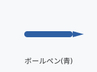

この頁には絵が3枚書いてあるが、見えるべきは2枚だけ。
青いボールペンの絵。SVG は高精細の PNG に直して出す (「画像を挿入」と同じ道 — resvg):

赤い丸に×の印:
次の絵は別ホストを指している。writer は取りに行かない — 絵は出ず、帳簿に「外部の画像×1(取りに行かない)」の類が出れば合格。 代替文が読めるのは良い:
絵のあとの段落。3枚目で止まらずにここまで読めていること。